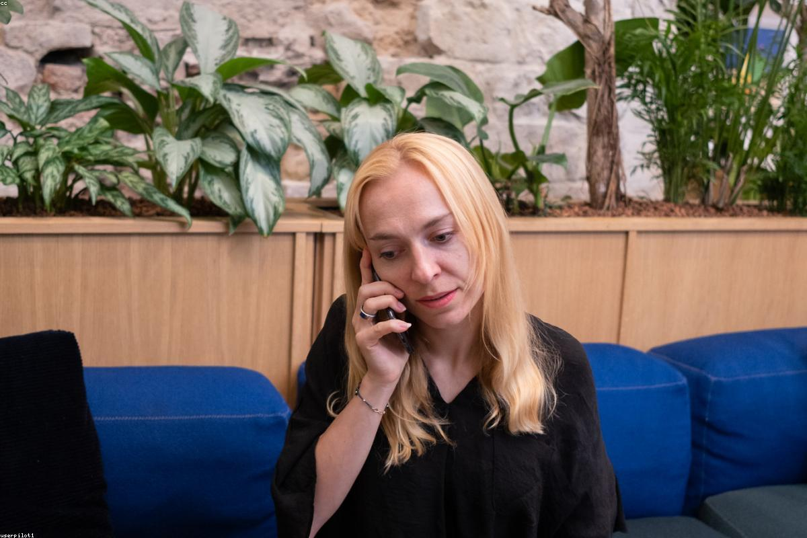
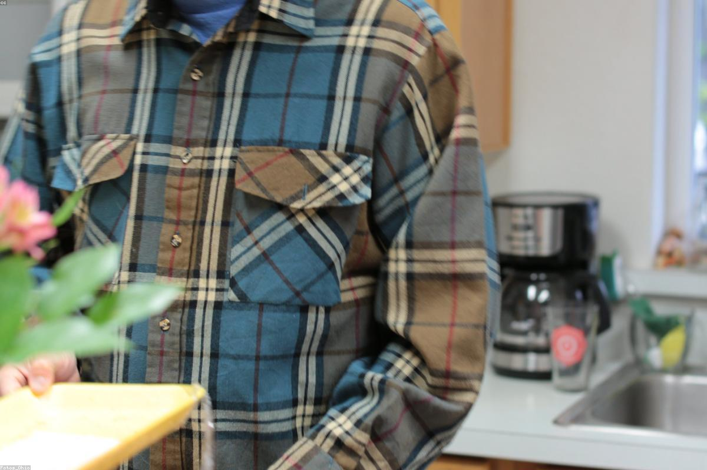

WeDev Team
WeDev Team è un'azienda fittizia, immaginata come una piccola software house con sede a Jesi (AN). A differenza delle grandi strutture aziendali, WeDev lavora con un unico team di sviluppo che si occupa di tutto: dall'analisi dei requisiti alla progettazione, dallo sviluppo al rilascio.
Questa struttura compatta significa che ognuno conosce il progetto dall'inizio alla fine, le decisioni si prendono velocemente e il confronto tra colleghi è continuo. Si occupa principalmente di soluzioni software gestionali, applicazioni web e mobile e consulenza informatica per le piccole e medie imprese del territorio marchigiano — un contesto in cui le competenze tecniche si mescolano spesso con la necessità di capire davvero le esigenze del cliente.
Junior Developer (in formazione)
Durante il FSL ho iniziato con attività più manuali: una delle prime cose che ho fatto è stata realizzare dei supporti fisici per reggere i macchinari durante la fase di testing. Un inizio diverso da quello che mi aspettavo, ma utile per capire il contesto in cui l'azienda opera. Con il tempo sono poi passato allo sviluppo software, affiancato dal tutor aziendale, che mi ha guidato nei primi passi tra strumenti, flussi di lavoro e logiche di sviluppo reale.
Cosa ho fatto
Sviluppo Frontend
Ho lavorato all'interfaccia utente del gestionale — HTML, CSS, JavaScript. L'obiettivo era costruire qualcosa che fosse semplice da usare per chi ci lavora ogni giorno, non solo funzionante. Componenti riutilizzabili, form con validazione, layout responsivo. La differenza rispetto a scuola è che qui dall'altra parte c'è un cliente reale.
Sviluppo Backend
Ho contribuito allo sviluppo della logica applicativa del gestionale, affiancato dai colleghi senior. API REST, gestione dei dati, flussi tra le diverse parti del sistema. Ho imparato a muovermi in una codebase esistente, capire le scelte di chi ha scritto prima di me e inserirmi senza rompere quello che già funzionava.
Gestione Database
Il gestionale girava su un database relazionale e una parte del mio lavoro è stata progettare e interrogare le tabelle che gestivano i dati dell'azienda cliente. Query per estrarre reportistica, strutture per organizzare le informazioni in modo che reggessero nel tempo.
Documentazione e Testing
Ho testato le funzionalità sviluppate e contribuito a documentare il lavoro fatto. In un software gestionale che qualcuno userà ogni giorno, un bug non è solo un errore tecnico — è un problema concreto per chi ci lavora. Questo ha cambiato il modo in cui mi sono approcciato al testing.


Le prime settimane
Il primo impatto con un ambiente lavorativo vero è stato più duro di quanto pensassi. Strumenti che non avevo mai usato, processi che davano per scontate cose che io non sapevo, conversazioni tecniche in cui ogni tanto mi perdevo. Le prime settimane le ho passate più ad ascoltare e prendere appunti che a fare. Ho imparato che chiedere non è una debolezza — è l'unico modo per non perdere tempo e non fare danni. Piano piano ho trovato il ritmo: documentazione in inglese, ricerca autonoma delle soluzioni, meno paura di sbagliare. Verso la fine riuscivo a portare a termine piccoli task da solo, il che sembra poco ma per me è stato il segnale che qualcosa stava cambiando.
Hard skills acquisite
- Sviluppo web full-stack: HTML, CSS, JavaScript e PHP
- Query SQL e gestione di database MySQL
- Lettura, scrittura e comprensione di documentazione tecnica in italiano e in inglese
Soft skills acquisite
- Lavoro in team su un progetto con scadenze e responsabilità reali
- Comunicazione con colleghi e figure senior in un contesto professionale
- Organizzazione del proprio lavoro e rispetto dei tempi concordati
- Capacità di risolvere problemi in autonomia, sapendo quando chiedere aiuto
- Adattamento rapido a strumenti e ambienti di lavoro nuovi
- Disponibilità a ricevere feedback e a rivedere il proprio lavoro senza difendersi
Cosa mi ha lasciato
Tornare a scuola dopo il FSL è stato strano, nel senso buono. Alcune cose che studiavo le capivo finalmente fino in fondo, perché le avevo viste funzionare — o non funzionare — in un contesto reale. Ho capito che quello che mi mancava non erano le competenze tecniche, ma tutto il resto: sapersi muovere in un team, gestire il proprio tempo senza che qualcuno te lo ricordi, accettare che il tuo codice venga rivisto e migliorato da altri. L'esperienza mi ha confermato che lo sviluppo software è la direzione giusta per me — non perché sia facile, ma perché anche quando è difficile non mi pesa.